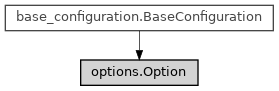

Option¶
- class ase2sprkkr.common.options.Option(definition, container=None, value=None)[source]¶
Class hierarchy
Constructor
- __init__(definition, container=None, value=None)[source]¶
” :param definition: The value type of the option and its format (in potential and/or task file) :type definition: ValueDefinition :param container: The container, that owns the object :param value: The value of the option. :type value: mixed
Attributes
__doc__str(object='') -> str str(bytes_or_buffer[, encoding[, errors]]) -> str
Return the name of the option/section.
Inherited attributes
The "definition" of the option or section.
The parent container.
Methods
__call__()Call self as a function.
__init__(definition[, container, value])"
__repr__()Return repr(self).
_find_value(name)as_dict(add_to)clear([do_not_check_required])Clear the value: set it to None
get()Return the value of self
get_path()save_to_file(file, *[, validate])Write the name-value pair to the given file, if the value is set.
set(value, *[, unknown])Set the value of the option.
Inherited methods
_get_path([include_root])Return the dot-delimited path to the item in the configuration tree.
_get_root_container()Return the root object of the configuration tree.
to_dict()Return the value of self, in the case of container as a dictionary.
- set(value, *, unknown=None)[source]¶
Set the value of the option.
- Parameters
value (mixed) – The new value of the option.
unknown (str or None) – A dummy argument to make the method compatibile with ase2sprkkr.sprkkr.common.configuration_containers.ConfigurationContainer.set()
- save_to_file(file, *, validate=True)[source]¶
Write the name-value pair to the given file, if the value is set.
- property name¶
Return the name of the option/section. The name is defined by the definition of the object.
- Returns
name (str)
The name of the object.